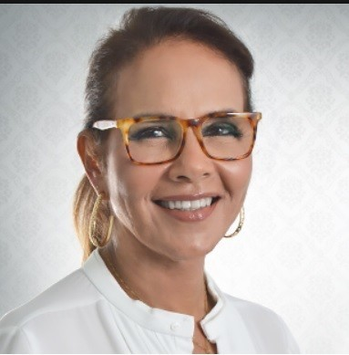

Início · Trajetória
Uma história na cirurgia plástica e na SBCP.
Formada em 1981, com pós-graduação em Paris, a Dra. Cristina Menezes foi a primeira mulher a presidir a SBCP Regional Bahia e integrou a Diretoria Nacional da sociedade na gestão 2022–2023.
1976–1988
Formação
- MedicinaEscola de Medicina da Fundação Técnico-Educacional Souza Marques, no Rio de Janeiro (1976–1981).
- ParisExtensão universitária em microcirurgia reconstrutiva na École de Chirurgie de Paris, segundo o currículo publicado no site dela.
- Université Pierre et Marie CurieTechniques microchirurgicales, na Faculté de Médecine Pitié-Salpêtrière.
A Plastiko’s nº 231 resume: “Graduação em Medicina pela Escola de Medicina da Fundação Técnico-Educacional Souza Marques e pós-graduação em Microcirurgia e Cirurgia da Mão pela Université Pierre Marie Curie”.
Sociedade Brasileira de Cirurgia Plástica
Na SBCP

- Membro titularDa Sociedade Brasileira de Cirurgia Plástica, segundo o currículo dela.
- TesoureiraDa SBCP Regional Bahia, segundo o mesmo currículo.
- Presidente da SBCP-BAA primeira mulher a presidir a regional: “Pela primeira vez na sua história, a sociedade no estado seria gerida por uma mulher”, registrou a Plastiko’s nº 208.
- Diretoria Nacional2ª vice-presidente da SBCP, segundo o expediente das Plastiko’s nº 231 e nº 234.
“Certamente que nosso ganho, neste ano, foi o fato de nos aproximarmos mais da sociedade, das pessoas em geral, mostrando a elas a importância da atividade, a diversidade de nossa atuação e como podemos ser importantes para todos”Dra. Cristina Menezes, no balanço de 2016, na Plastiko’s nº 208
Fonte: Plastiko’s nº 208, p.97–98 · nº 231 · nº 234
Ciência
Publicação
Em junho de 2011, a Revista Brasileira de Cirurgia Plástica publicou um relato de caso de reconstrução com retalho de omento, realizado no Hospital São Rafael, com a Dra. Cristina entre os autores (DOI 10.1590/S1983-51752011000200028).
Atuação
Hoje
A Dra. Cristina atende no consultório do Edifício Horto Office, no Horto Florestal, e tem vínculo como cirurgiã plástica no Hospital São Rafael e no Hospital Aristides Maltez, segundo o CNES (setembro de 2026).
No Instagram @dracrismenezesplastica, ela escreve sobre cirurgia plástica regenerativa, pálpebras, otoplastia e mamas.
Consultório
Edifício Horto Office, R. Waldemar Falcão, 979, 4º andar, Horto Florestal.
Hospitais
Hospital São Rafael e Hospital Aristides Maltez.
Nas palavras dela
Nas palavras dela
“Minha história na medicina começou cedo, com a certeza de que essa seria a minha missão de vida.”Dra. Cristina Menezes, no Instagram, em 16/09/2025
“Durante muito tempo eu relutei em ter um site. Na verdade eu gosto mesmo é do contato, da visita, da consulta.”Dra. Cristina Menezes, no site dela, em 2016
Dúvidas frequentes
Perguntas comuns
A Dra. Cristina é membro titular da SBCP?
Sim. O perfil dela no localizador da Sociedade Brasileira de Cirurgia Plástica traz a categoria de membro titular.
Qual é o registro dela?
CRM-BA 10215, com RQE 11174 em Cirurgia Plástica.
Onde ela se formou?
Na Escola de Medicina Souza Marques, no Rio de Janeiro, em 1981, com pós-graduação em microcirurgia e cirurgia da mão em Paris.
Agende
A consulta é o primeiro passo.
“Na verdade eu gosto mesmo é do contato, da visita, da consulta.” No Edifício Horto Office, de segunda a sexta, das 8h às 17h.